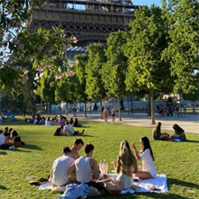
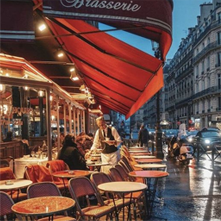

모두가 감탄하는 파리의 아름다움을 직접 경험하세요!
여름방학에 떠나는 파리여행
대학생, 휴학생, 취준생 모두 가능!
파리로 떠나는 여름, 당신의 모험이 시작됩니다!
-
에펠탑 앞에서 즐기는 피크닉
에펠탑 앞에서 피크닉을 즐기는 것은 매우 로맨틱하고 특별한 경험입니다. 아름다운 풍경과 함께 자유롭고 편안한 분위기 속에서 식사를 즐길 수 있으며, 파리의 문화적인 매력을 직접 체험할 수 있는 기회를 제공합니다. 에펠탑의 아름다운 전망을 배경으로 로맨틱한 분위기를 느끼며, 공원에서 사람들과 함께 시간을 보내는 것은 파리 여행의 매력적인 부분 중 하나입니다.
-

‘미식의 나라 프랑스’ 아름다운 레스토랑에서의 식사
프랑스 파리의 아름다운 레스토랑에서 식사를 즐기는 것은 정말 특별한 경험입니다. 파리는 세계적으로 유명한 미식의 중심지로, 그곳의 레스토랑에서는 고급스럽고 정교한 프렌치 요리를 맛볼 수 있습니다. 프랑스 음식 문화의 전통을 지키며 제공되는 메뉴들은 신선하고 품질이 뛰어나며, 특히 와인과의 조화는 더욱 훌륭합니다. 또한, 많은 레스토랑들이 아름다운 인테리어와 프랑스의 전통적인 분위기를 제공하여 식사가 단순한 식사 이상의 문화적인 경험으로 자리잡을 수 있습니다.